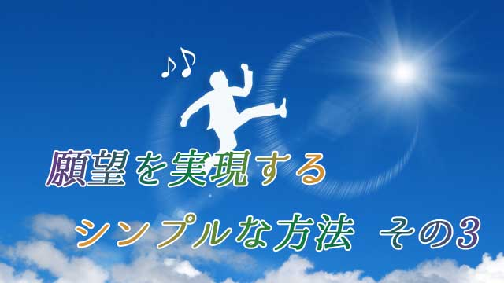

前回私は、
「願いを叶えるには執着しすぎず忘れてしまうことが大切だ」と言った。
それは自分というエゴをいったん消し去ることが必要だからだ。
望みは追い求めるほど逃げて行く。
自分を消すことで追う者と追われる者という二元性も消滅する。
逆説的だが「自分」が消えることで「望みの世界」と一体化することができる。追いつ追われつの逃走劇は終わりを迎える。
仕事でもスポーツでも、芸術でも最高のパフォーマンスが達成されるとき何が起こっているだろう。
「最高の結果を出そう」というエゴ（自我）が消え去っているときだ。
日常生活でも物事がトントン拍子に進んでいるとき「良い結果を出そう」などと計算ずくで動いていないはずだ。
いま目の前の対象（やるべきこと）に無心で打ち込んでいるとき、その対象と一体化するほどに集中しているとき、気がついたら結果として最高の状態が達成されていた、というのが正しい。
そう。成功は常に自分の歩んだ後ろに出来るもの。振り返ればそこにあったというのが実感なのだ。決して遠い将来に追い求めるものではない。それだと一生夢を追い続けるだけの人生になってしまうだろう。
だから「叶えようとする自分」があってはならない。対象と一体化するときそれは「すでに叶っている自分」なのであり、叶っているからこそ現象化すると言える。
１．
私たちは何かを達成しようとするとき、まず目標（ゴール）を決め方法を考え、計画的に実行しようとする。なるべく合理的に行動することが正しいと思い込んでいる。
学校でもそのように教わったし、親や世間の人々もそうするよう勧めてきたからだ。
しかしこのやり方はうまく行かない。
なぜならこのような合理主義は「ああすればこうなる」「こうするためにはあれが必要だ」という単純な因果律と直線的時間論に基いているからだ。一見科学的思考のようだが、これは既に古典的科学観であり古い。アインシュタインや量子論の知見によれば、一律に広がる空間や一様に流れる時間の存在は完全に否定されている。
つまりAがあるからBがあり、BがあるからCがあるという因果的とらえ方も直線的時間の存在を前提としている以上修正を迫られることになる。常に原因が結果に先行しているとは限らないわけで、むしろ原因と結果は同時に発生していると考えるべきだ。そう思えないのは私たちの脳がそのような形式でしか物事を認識できないからだ。
要するに直線的時間や因果論は人間的な見方でしかないということ。「結果」は目の前にあるのにそれを見ようとせず「原因」ばかりにこだわり、わざわざ達成を遅らせている。それが私たちの姿だということだ。
２．
だが、原因と結果が同時に存在していると言われても直ちに理解することは難しい。
私たちは時間の存在を前提にしているからどうしても「何をやるにしても時間がかかる」と当たり前のように考えてしまうからだ。
話を分かりやすくするために一つ例え話をしたい。
ここに巨大なタペストリーがあるとしよう。様々な色彩が織りなす一枚の絵となっている。細部に目をやればカラフルで複雑な紋様にしか見えないが、少し離れて見ればそこに一輪の花が描かれているのが分かる。
つまり花が結果だとすれば、各々の糸は原因ということになる。一見すると何を表しているのか分からない各々の紋様が、花という全体像に不可欠な要素だったと分かる。
花が花であるためにはそれらの無数の糸が互いに複雑に織り合わされている必要があった。いわば複雑な糸の編み目を「縁」として花が浮き上がってくると言える。
この編み目の紋様が起こる出来事であったり、方法や手段、すなわち原因を表している。
ここで大切なことは花は最初からあったということである。私たちは紋様（細部）に目を奪われるあまりそれが見えていなかった。
それがつまり、達成を遠くに見て方法や手段という原因（理由）づくりにばかり奔走している様子なのだ。そして細部を一つひとつ点検して「これはどういう意味か」「なぜこんなことが起こるのか」などと紋様や色を見て悩んでいる。
その一連の点検作業が現実上では時間の経過として経験されているが、実際は絵から少し離れて全体像を見れば花（結果）も紋様（原因）も同時に存在していることが分かる。
だから、ただ花（望み）を見ると選択すればよいのだ。
３．
要するに私たちは「望みの現実は既にある」と安心していてよいのだ。肩の力を抜いてリラックスすること。「何が何でも達成するぞ」と力んだり、「どうすれば…」と手段方法に心を悩ませる必要はない。それは必死で紋様と格闘していることになり、かえって実現を妨げる行為だからだ。追うほど望みは遠ざかる。
「自分の力で何とかしよう」というエゴを捨て去り「全体」が自分を通して何を実現させようとしているか、その意思と共にあることが必要となる。天命に委ねる感覚に近い。
後は起こる出来事を乗り継いでいくことで自ずと望みの世界に到達する。なぜならタペストリーという「絵」はすでに完成しているからだ。花（実現）と紋様（出来事）は2つで１つ、ワンセットで1枚の絵という全体を構成している。
その全体が自分の内部で設計図となり外側に物理的現実として投影される。
自分というエゴを消し去り、全体（完成された絵）と一体化すればするほど「実現」は早まり物事はスムースに展開する。自力でアレコレ策を講じることは「全体の流れ」に対する抵抗でしかない。これは何もするなということではない。自らの内的空間―時空を超えた領域―で既に望みが実現していることを信じ流れに乗り続ければ適切なタイミングで行動が起こってくる。
思考が必要なら思考が、行動が必要なら行動がもっとも適切なタイミングで起こってくるのだ。そして気がついたら叶っていたということになる。
これが本当の意味での創造であり願望達成の正しいあり方なのだ。